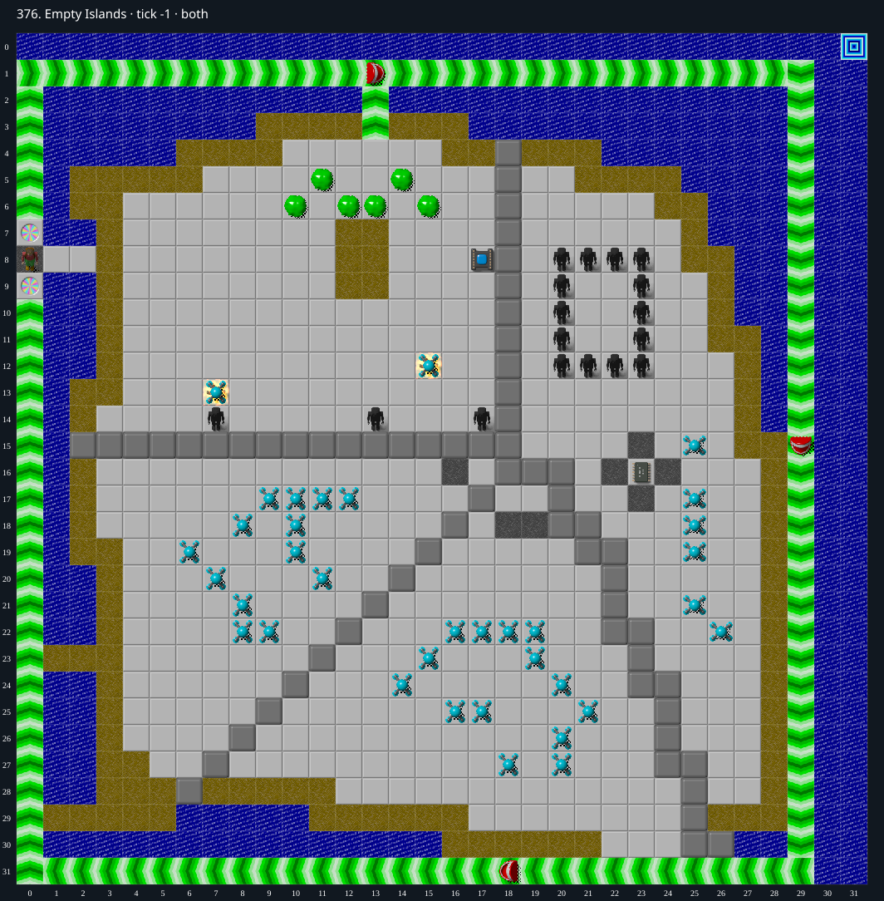

Jacques · Original Tile World MS
376. Empty Islands
Verified replayA winning MS replay preserves the disposable bridge, collects all four chips, uses a diagonal replay command to return through the teleports, and exits at tick 920. Native and TypeScript traces match exactly.
4 chips required · 120 second time limit
Verified in both engines. Native Tile World and the web MS engine both completed at tick 920 (46 seconds), with identical full traces. Verification certificate.
Winning strategy
- Keep the Empty-over-Water bridge at (1,8),(2,8) unused. Wait until a Teeth covers the upper teleport (0,7), then enter the lower teleport southward. Because MS skips covered teleport destinations, Chip emerges onto the outer force-floor circuit. The replay uses random seed 67 and starts this maneuver at tick 85.
- Collect the right-island chip (23,16), return through the original right-island entrance, then collect the center chip (19,17) and lower-left chip (17,16). Hidden chips require leaving and reentering after the covering Empty tile disappears.
- Return to the left force lane with a gap behind another creature. At tick 743, a diagonal N+E replay command produces an extra north step on the north force floor: the same-direction suppression check occurs before the diagonal is reduced to north. This puts Chip in the brief window where the upper teleport is covered, so teleportation fails and Chip advances onto starting Gravel (0,8) at tick 746.
- Cross the preserved bridge, collect the final hidden chip (14,8), then open socket (17,8), leave and reenter for the flippers beneath it. Swim to exit (31,0).
- The saved TWS completes the unchanged DAT in both engines at tick 920 with all four chips collected. The full native and TypeScript traces match.
Inspect both layers
The main map shows the initial runtime state. Switch to the buried layer to inspect hidden terrain and items. Hover coordinates are also available in the downloadable SVG.


Recorded checks and attempts
- DAT two-layer inventory: Exact DAT metadata/layers decoded; initial production runtime loaded and rendered with repository sprites.
- exact-runtime initial-island skip: Chip reaches (0,4) at tick 148 while both Empty-over-Water bridge cells remain intact. This invalidates a simple no-return argument for the initial island.
- constructive prefix: Initial bridge intact; Chip at (1,23); returning west collides with a jammed creature.
- winning replay: {"kind":"winning replay","tws":"376.tws","certificate":"376.tws.json","typescriptFinalTick":920,"nativeFinalTick":920,"exactTraceParity":true,"exactInputBytesRead":true,"nativeStderr":"","seed":67,"stepping":0,"diagonalCommand":{"tick":743,"code":9,"direction":"N+E"}}
Scope and limitations
- The replay contains a diagonal N+E command at tick 743. It is verified as a native MS TWS replay; manual keyboard reproduction is not established.
Evidence
- Structured report
- web/src/ruleset-ms/impl/builtinLevelRegistration.ts
- legacy_c/mslogic.c:1002-1011 (bounded cardinal movement)
- legacy_c/mslogic.c:1034-1042 (socket/key requirements)
- legacy_c/mslogic.c:1616-1736 (arrival/terrain effects)
- legacy_c/mslogic.c:1825-1832 (exit completion)
- web/src/ruleset-ms/impl/chipMovement.ts:104-108 (TypeScript completion)
- legacy_c/mslogic.c:1365-1386 (same-direction force suppression precedes diagonal normalization)
- legacy_c/mslogic.c:1396-1434 (only uncovered teleport destinations are considered)
- web/src/ruleset-ms/impl/chipInput.ts:263-273 (replay input latching preserves direction codes)